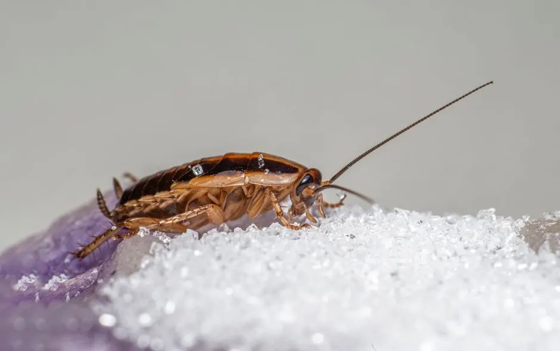
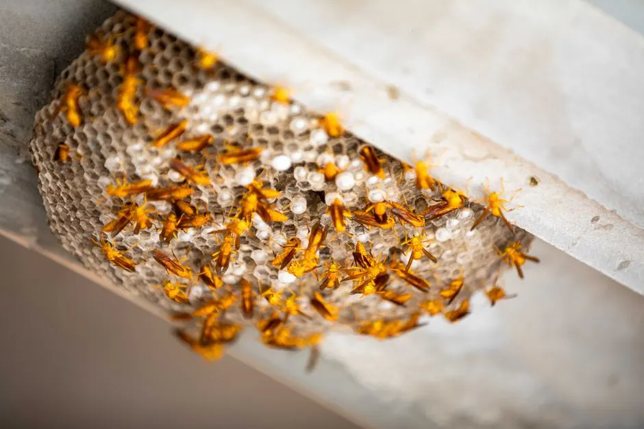
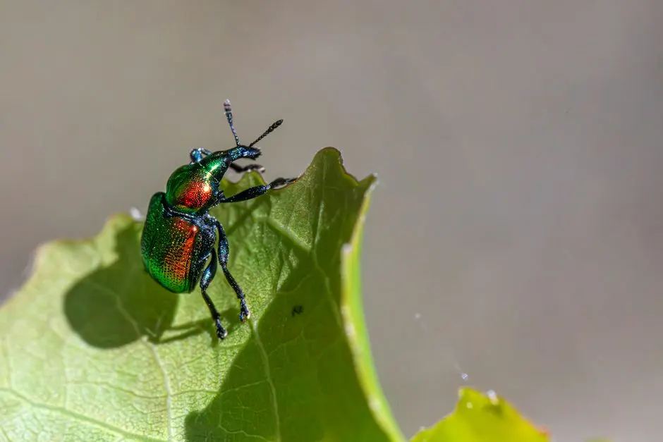
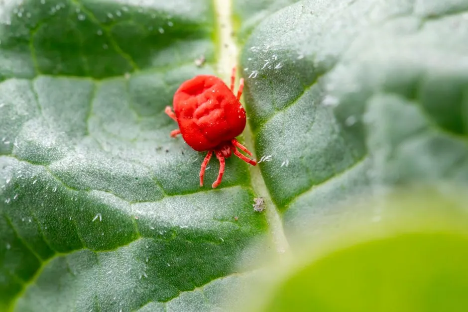

Licensed roach extermination for homes and apartments across Riverside County
Cockroach Control Corona CA That Clears Roaches Fast
Cockroach control Corona CA starts with a full inspection, not a guess. We track the species, find the harborage behind your cabinets and in your walls, then treat with bait gel and insecticide that roaches carry back to the nest. Whether you own a house near Dos Lagos or rent an apartment off Ontario Avenue, our licensed technicians handle German and Oriental roaches in one visit. Same-day service is available across Corona, CA.
Live phone supportUpfront optionsBacked workmanship
What's included
What Our Cockroach Control Service Includes
Every cockroach control Corona CA visit covers the full inspection, targeted treatment, exclusion sealing, and a written warranty. We do not charge extra for the day-14 follow-up on German roach jobs, and there is no separate fee for the service report. Here is what is on the ticket.
Full Interior Inspection
Kitchen, bathrooms, laundry, garage, and utility areas checked with a UV flashlight and inspection mirror. We identify the roach species and locate the harborage before any product goes down. This is the step that decides whether you need a one-visit job or a multi-visit protocol.
Bait Gel And Station Placement
Bait gel goes into cabinet hinges, cracks, and voids where roaches travel. Bait stations are set along baseboards and behind appliances. Roaches carry the bait back to the harborage, which is why this works better than spraying the ones you can see.
Exclusion Sealing
Gaps around pipes, conduits, and shared walls get sealed with sealants and exclusion mesh. In Corona apartments this is the difference between a one-month fix and a permanent one. Sealing is included, not sold as an add-on.
Written Service Report
You get a report listing the species found, products applied, and entry points sealed. Renters can hand it to a landlord or property manager. It also gives the next technician a baseline if a follow-up visit is needed.
30-Day Warranty And Follow-Up
If roaches return within 30 days, we re-treat at no charge. German roach jobs include a scheduled day-14 follow-up to break the breeding cycle. No hidden trip fees, no upsell to a monthly plan you did not ask for.
Service overview
What Cockroach Control Corona CA Actually Involves
Cockroach control Corona CA is a targeted pest control service that eliminates roach infestations at the source using bait gel, insecticide, and exclusion work rather than fogging alone. A technician inspects the kitchen, bathrooms, garage, and utility lines with a UV flashlight and inspection mirror, identifies whether you have German roaches (small, fast, breed indoors) or Oriental roaches (larger, often tied to drains and moisture), then places bait stations and gel where roaches travel. We seal cracks with sealants and exclusion mesh so new roaches cannot move in from neighboring units.
Corona's warm, dry summers push roaches indoors looking for water, and the city's mix of 1970s tract homes and newer apartment complexes gives them plenty of wall voids to hide in. If you keep seeing roaches in your Corona apartment, the problem is usually shared plumbing chases and gaps around pipes, not just your cleaning habits. We treat those entry points directly. For homeowners in Riverside County, a single German roach sighting in daylight often means a harborage of 30 or more behind the refrigerator.

How we workWe verify the cause, compare realistic options, and confirm the repair before we leave.
The service timeline
Our Cockroach Treatment Process, Step By Step
The process flexes to the condition, but these checkpoints keep decisions clear.
Phone Intake
You describe what you are seeing: how many roaches, what size, day or night, which rooms. That tells us whether to expect German roaches in the kitchen or Oriental roaches near a bathroom drain. We book a same-day or next-morning window and text you the technician's arrival time. Calls take about five minutes.
Full Inspection
The technician inspects the kitchen, bathrooms, laundry, garage, and any wall voids with a UV flashlight and inspection mirror. We check under the sink, behind the fridge, inside cabinet hinges, and along plumbing penetrations. This step runs 20 to 30 minutes and is where we find the harborage that fogging misses.
Targeted Treatment
We place bait gel in cracks and hinge points, set bait stations along travel routes, and apply insecticide to voids and baseboards. Diatomaceous earth goes into dry wall cavities. No broadcast spraying over your dishes or food-prep surfaces. Treatment itself takes 30 to 45 minutes depending on square footage.
Exclusion Sealing
We seal gaps around pipes, conduits, and shared walls with sealants and exclusion mesh. In Corona apartments, this is the step that keeps roaches from walking back in from the unit next door. Sealing adds 15 to 20 minutes and is what makes the result last beyond the first week.
Walkthrough And Warranty
Before we leave, the technician shows you what was applied and where, and flags any moisture issue feeding the infestation. You get a written service report and a 30-day warranty. If activity continues past day 14, we schedule the included follow-up visit to re-treat the harborage.
Tools & methods
Tools And Methods We Use
Purpose-built equipment, used by trained technicians, so the job is done accurately the first time.
UV flashlight
Reveals roach droppings, shed skins, and egg cases in dark voids. It is how we confirm an active harborage instead of guessing from a single sighting.
Inspection mirror
Lets us see behind appliances, under sinks, and inside cabinet gaps without pulling the whole kitchen apart. Critical for apartment units with tight cabinetry.
Bait stations
Placed along baseboards and travel routes. Roaches enter, feed, and carry the active ingredient back to the harborage, which kills the colony rather than the stragglers.
Insecticide sprayers
Used for crack-and-void applications along baseboards and pipe penetrations. We keep product out of food-prep areas and off countertops.
Moisture meters
Detect the damp spots under sinks and around drains that attract Oriental roaches. Fixing the moisture source is often what makes the treatment stick.
Power sprayers
For exterior perimeter treatments on larger Corona properties, including garage walls and foundation lines where roaches stage before coming inside.
Use cases
When To Book Cockroach Control
These examples show how the service framework adapts rather than forcing every call through one repair.

Apartment Roaches Coming Through The Wall
A renter in Downtown Corona was seeing roaches in the bathroom and kitchen every night. The unit had been treated twice before with no lasting result. The shared plumbing chase behind the bathroom wall was open, and roaches were moving in from the adjacent unit. → We treated the unit, sealed the plumbing chase with exclusion mesh, and gave the renter a written report for the landlord. Once the neighboring unit was treated, activity stopped. The renter reported no sightings after day 18.
Oriental Roaches From A Floor Drain
A Corona Hills homeowner found large roaches in the laundry room and garage, especially at night. The floor drain was the entry point, and the area around it stayed damp from a slow leak. Foggers had scattered the roaches into the garage without killing the source. → We treated the drain void, applied insecticide to the wet areas, and sealed the pipe penetration. The homeowner fixed the slow leak the same week. Roach activity stopped within 10 days and the garage has stayed clear through the season.
Problems we solve
Roach Problems We Solve In Corona
Most calls we get are one of these three situations. Each one has a different cause and a different fix, which is why we inspect before we quote the treatment.
Roaches in the kitchen after dark
We locate the harborage behind the fridge, dishwasher, or cabinet hinges, apply bait gel at the source, and set stations along the travel routes. Most kitchen infestations clear within 14 to 21 days, with the included follow-up confirming the result.
Roaches coming up through drains
We treat the drain voids, seal the pipe penetrations with exclusion mesh, and apply insecticide to the wet areas where they harbor. If there is a moisture issue feeding them, we flag it so you can fix the source and stop the cycle.
Roaches returning to an apartment unit
We treat your unit, seal the shared-wall and plumbing-chase entry points, and document the findings in a written report for your landlord. When adjacent units get treated, the reinfestation loop closes and the problem stays gone.
Roaches in a garage or storage area
We treat the garage perimeter, set bait stations along the wall-floor joint, and seal the door sweep and conduit gaps. This is often added to a kitchen treatment on the same visit at no extra trip charge.
Pricing process
What Cockroach Control Costs
$180 - $450 for most single-family and apartment jobs
Home size
Larger homes take more bait stations, more sealing, and more inspection time. A 1,200-square-foot apartment is a different job than a 3,000-square-foot house with a garage and two bathrooms.
Roach species
German roaches breed indoors and often need the day-14 follow-up to break the cycle. Oriental roaches are usually tied to a moisture source, which can mean a shorter treatment once the drain area is sealed.
Number of active rooms
A kitchen-only infestation is the cheapest scenario. Once roaches have spread to bathrooms, laundry, and garage, the treatment area grows and so does the labor.
Customer reviews
Reviews From Corona Roach Jobs
★★★★★
“We had German roaches behind the fridge for weeks and the store-bought traps did nothing. The technician found the harborage in about ten minutes, sealed the gap under the sink, and set bait stations. Day three we stopped seeing them. The day-14 follow-up was included, and we have been clear since. Worth every dollar.”
★★★★★
“My apartment had roaches coming through the wall from the unit next door. They treated my place, sealed the pipe chase, and gave me a report to send to my landlord. Once the neighbor's unit got treated too, the problem actually stopped. I had been dealing with this for a year before that.”
★★★★★
“We manage several units off Ontario Avenue and roaches were a recurring complaint. Their team treated three units in one morning, documented the shared-wall entry points, and set a follow-up. Tenant complaints dropped to zero over the next two months. The written reports make my job easier.”
How much does cockroach control cost in Corona CA?
Most cockroach control in Corona CA runs $180 to $450 for a single-family home in 2026, with apartments typically at the lower end and heavy German roach infestations at the higher end. The price includes inspection, treatment, exclusion sealing, and a 30-day warranty. Square footage, roach species, and how many rooms are active are the three factors that move the number. You get the price on the phone before we book.
Why do I keep seeing roaches in my Corona apartment?
Shared plumbing chases and gaps around pipes are the usual reason. German roaches travel between units through wall voids, so treating only your apartment kills the ones inside but leaves the source next door. We seal those entry points with exclusion mesh and sealants, then document what we found so your property manager can schedule treatment on adjacent units. That combination is what stops the cycle.
What is the best roach exterminator in Corona?
The best roach exterminator in Corona is the one that inspects before treating, uses bait gel and insecticide in the harborage instead of fogging the room, and puts the warranty in writing. Ask whether the technician is licensed by the California Structural Pest Control Board and whether follow-up visits are included. We answer yes to all three, and we will show you the treatment map before we leave.
How long does cockroach treatment take in Corona California?
A standard cockroach treatment in Corona California takes 60 to 90 minutes on site for a single-family home, and about 45 minutes for an apartment. You can return to normal use of the kitchen the same evening once the bait gel has set. German roach jobs include a day-14 follow-up visit that runs 20 to 30 minutes. Full clearance usually shows by day 21.
Ready when you are
Book Cockroach Control Corona CA Today
Licensed technicians, upfront pricing, and a written 30-day warranty on every roach job. Call now and we will tell you what your treatment involves and what it costs before we book the visit.

Talk with the local team
Contact Our Corona Office
Call 951-257-7625 and a real person will answer, day or night. We book same-day inspections when you call before 2 p.m., and we run 24/7 emergency service for urgent problems. Tell us what you are seeing and we will tell you what it takes to fix it.
Live team · Open 24/7
Need pest control? Just call.
No forms and no waiting. Talk to a licensed Corona technician and get your free inspection booked in minutes.
951-257-7625 Tap to call now- Same-day appointments when you call before 2 p.m.
- Free inspection and written estimate
- Emergency response in under 90 minutes
- Licensed, insured and warrantied work
Prefer email? info@pestcontrolcoronaca.com